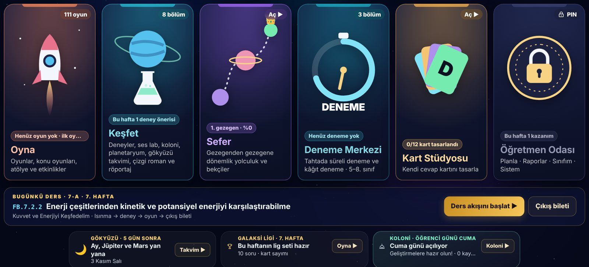
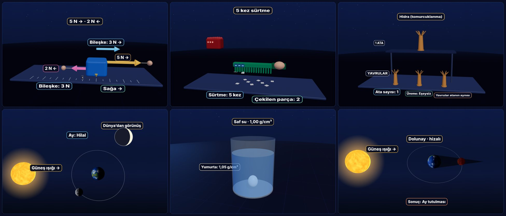
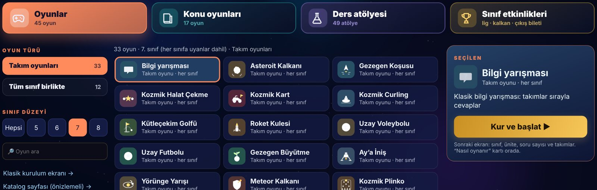
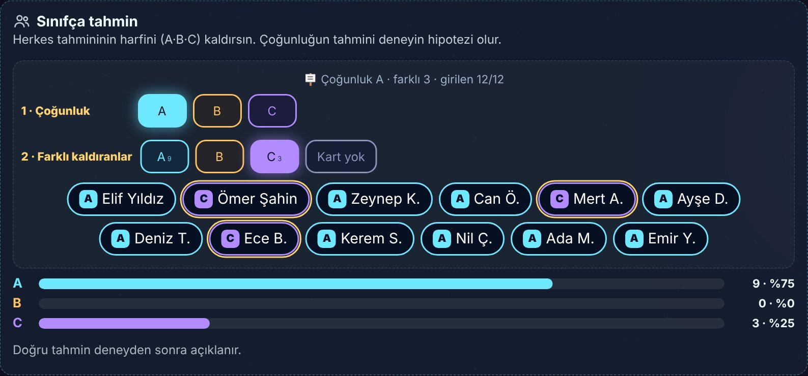
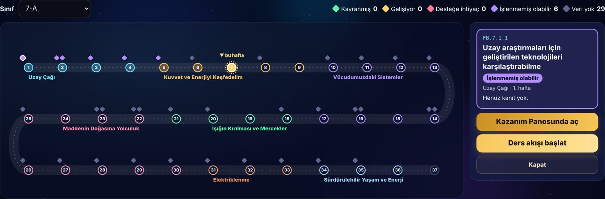
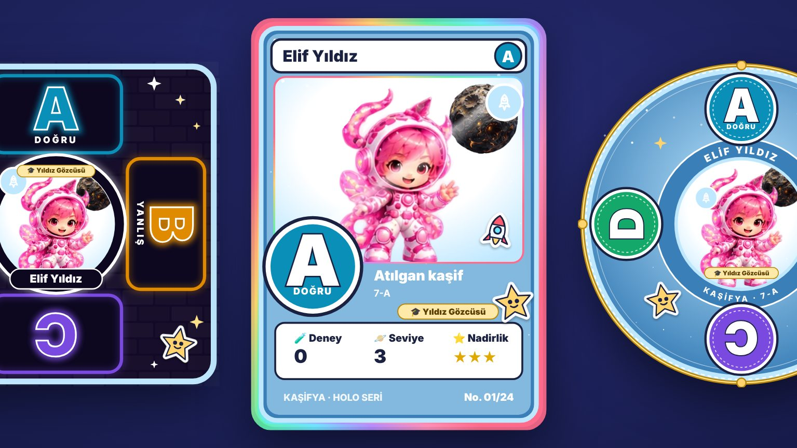
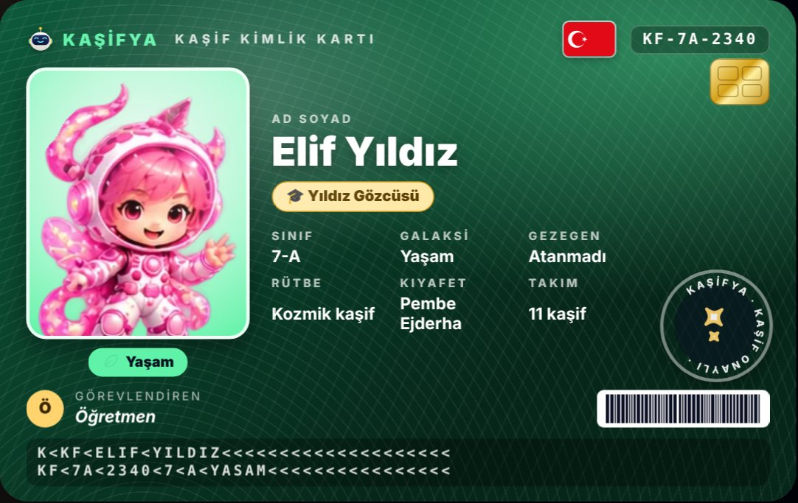
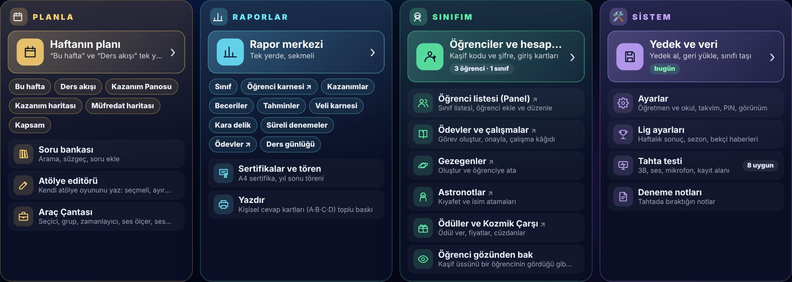
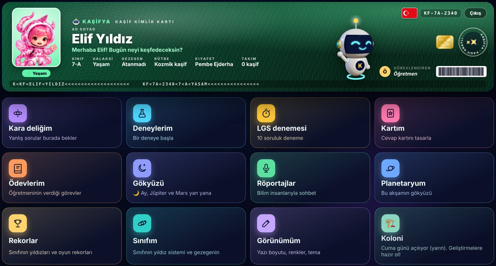
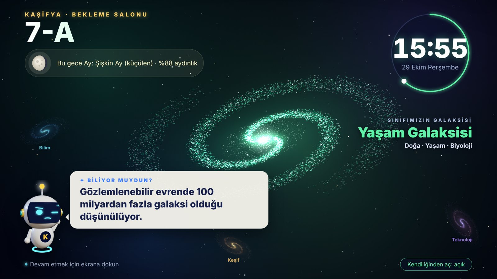

Sınıfça keşfet,
oyna, öğren.
Kaşifya, akıllı tahtada bütün sınıfın birlikte oynadığı fen oyunları, 3B deneyler ve ders atölyeleri sunar. Öğretmen her kazanımı tek ekranda takip eder.
Tek dosya, internetsiz çalışır. Hiçbir veri internete gönderilmez; uygulama da öğrenci verileri de sizin flash belleğinizde durur. Öğretmenler için ücretsizdir, paylaşmak için bu sayfanın bağlantısını verin.

Bir fen dersinin ihtiyacı olan her şey
Isınmadan çıkış biletine kadar, dersin her anı için bir araç. Öğrenciler oynarken siz kimin neyi öğrendiğini görürsünüz.
Bütün sınıf birlikte
Herkes A·B·C·D kartını kaldırır, siz çoğunluğu bir dokunuşla girersiniz. Takım yarışları ve tüm sınıf oyunları.
3B deney ve atölye
Düzeneği kur, “Kontrol et” de, sonucu gör. Tanecikler, kaldıraç, devre, lazer, mevsimler ve daha fazlası.
Tahmin et · Gözle · Açıkla
Deneyden önce sınıf tahmin eder; sonuçta kimin doğru tahmin ettiğini ve yaygın yanılgıyı görürsünüz.
Kazanım haritası
Yılın 37 haftası tek yolda. Her kazanım kavranmış, gelişiyor ya da desteğe ihtiyaç rengiyle görünür.
Deneme Merkezi
Tahtada süreli yeni nesil deneme ve kâğıt deneme. Soru türüne göre analiz, kazanım haritasına otomatik yansıma.
Öğrencinin kartı
Kart Stüdyosu’nda kendi cevap kartını tasarlar: holo kartlar, görev arması, neon, çıkartmalar ve unvanlar.
Ekranlar
Akıllı tahtada uzaktan okunacak büyüklükte, sade ve renkli.









Kaşifya cebinizde: flash bellekle kurulum
Uygulama da öğrencilerinizin verileri de kendi flash belleğinizde durur. Hangi tahtaya takarsanız orada kaldığınız yerden devam edersiniz.
İndirin
Flash belleğe indir düğmesiyle kasifya.html dosyasını alın. Flash bellekte Kaşifya adında bir klasör açıp dosyayı içine koyun.
Açın ve bağlayın
Dosyayı tahtada Chrome ile açın. Karşınıza çıkan ekranda Verilerim flash bellekte'ye dokunup aynı Kaşifya klasörünü seçin; tarayıcı sorarsa Her ziyarette izin ver deyin.
Kullanın
Sınıfınızı ekleyin, oynayın. Her değişiklik birkaç saniye içinde flash belleğe kaydedilir. Başka tahtada aynı dosyayı açın: sınıflarınız gelir, birleşir.
FLASH BELLEK
└── Kaşifya
├── kasifya.html ← uygulama
├── Kasifya-veri.json ← verileriniz (kendiliğinden kaydedilir)
└── Kasifya-yedek-….json ← son 10 günün kopyaları
🔄 Güncelleme
Yeni sürüm çıkınca bu sayfadan kasifya.html'yi yeniden indirin ve flash bellekteki eski dosyanın üstüne kopyalayın. Verileriniz yanındaki dosyada durduğu için hiçbir şey kaybolmaz. Uygulama boş açılırsa Verilerim flash bellekte deyip klasörü seçmeniz yeterli.
🖥️ Tahta uyumu
Otomatik kayıt Chrome ve Edge'in bilgisayar sürümünde çalışır; Pardus tahtalarda Chrome ile kullanılabilir. Android tahtada ya da Firefox'ta Veri dosyasını indir ve Dosyadan birleştir ile aynı iş elle yapılır.
🔒 Gizlilik
Kaşifya'nın sunucusu yoktur ve internete veri göndermez. Ayrıntılar ve veli izin formu: Veri güvenliği ve KVKK.
Veriler sizde kalır
Derse hazır mısınız?
Ücretsiz. Tek dosya. Flash belleğinize indirin.